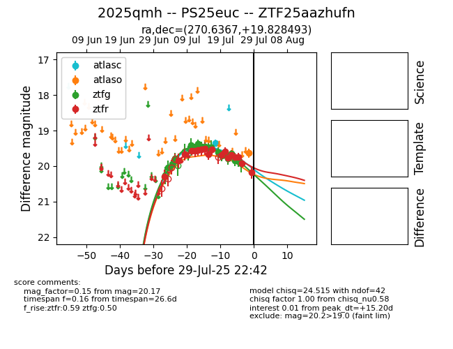

Target 2025qmh at 2025-07-29 22:42, see:
FINK: fink-portal.org/2025qmh
Lasair: lasair-ztf.lsst.ac.uk/objects/2025qmh
ALeRCE: alerce.online/object/2025qmh
TNS: wis-tns.org/object/2025qmh
YSE: ziggy.ucolick.org/yse/transient_detail/2025qmh
alt names
ZTF25aazhufn (ztf,fink)
2025qmh (tns,yse)
PS25euc (panstarrs)
coordinates:
equatorial (ra, dec) = (270.6367,+19.82849)
galactic (l, b) = (45.8619,+19.38560)
photometry
last atlasc=19.35, atlaso=19.63, ztfg=19.87, ztfr=20.17
1 atlasc, 1 atlaso, 17 ztfg, 18 ztfr detections
